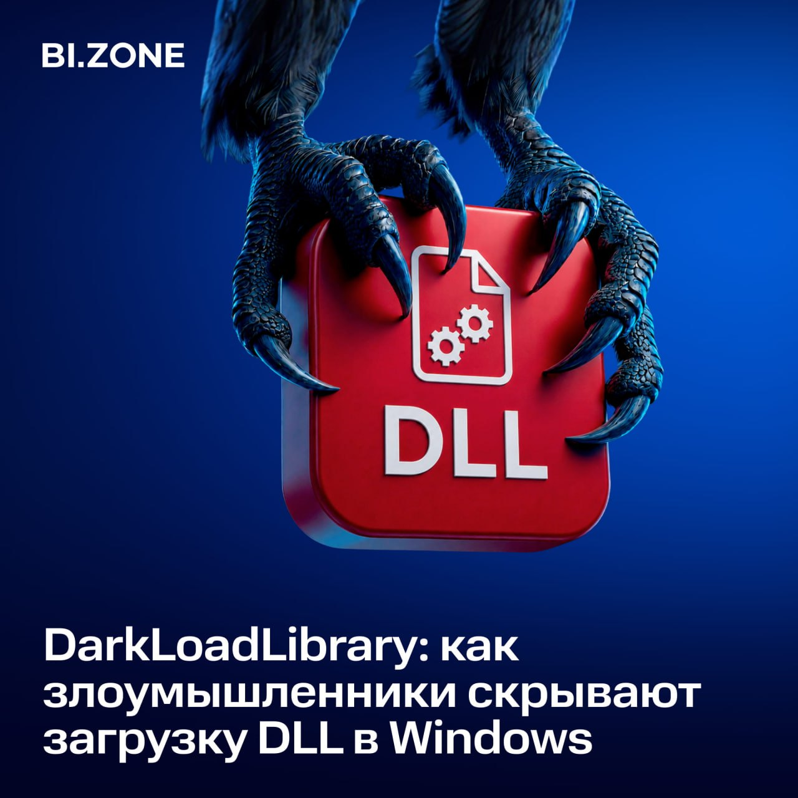

**🤔**** Рассказываем об инструменте для скрытой загрузки DLL в Windows и способах его обнаружения**
Большинство средств защиты отслеживают загрузку DLL с помощью механизма функций обратного вызова (Kernel Notify Routines). Он уведомляет защитные решения о появлении нового модуля в памяти процесса и позволяет анализировать его поведение или перехватывать выполнение.
DarkLoadLibrary позволяет обойти этот механизм. Вот как это выглядит:
Вместо стандартной цепочки NtCreateSection → NtMapViewOfSection библиотека загружается в память через NtAllocateVirtualMemory. В результате LoadImageNotifyRoutine не вызывается, а средства защиты не получают телеметрию о загрузке модуля.
В отличие от Reflective DLL Loading, эта техника позволяет загружать DLL непосредственно с диска, включая системные библиотеки. Благодаря этому вредоносное ПО может использовать штатные API Windows, не вызывая уведомлений о загрузке соответствующих модулей. Такой подход, например, реализован в C2-фреймворке NightHawk.
При этом полностью скрыть такую активность невозможно.
Если библиотека остается в системных списках, ее можно обнаружить по расположению в памяти процесса. Если же модуль отвязан от них, выявить использование DarkLoadLibrary помогают косвенные признаки, например анализ CallTrace в событиях доступа к памяти.
Как работает DarkLoadLibrary и какие артефакты помогают обнаружить эту технику —** **[**разобрали в статье**](https://bi.zone/expertise/blog/skrytaya-ugroza-chem-opasen-darkloadlibrary-i-kak-vyyavit-ego-ispolzovanie-pri-atakakh/?utm_source=telegram&utm_medium=post&utm_campaign=skrytaya-ugroza-chem-opasen-darkloadlibrary-i-kak-vyyavit-ego-ispolzovanie-pri-atakakh&utm_content=24.06.2026&utm_term=bi.zone).
